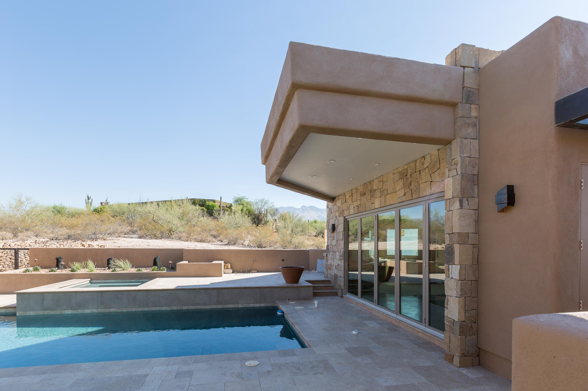
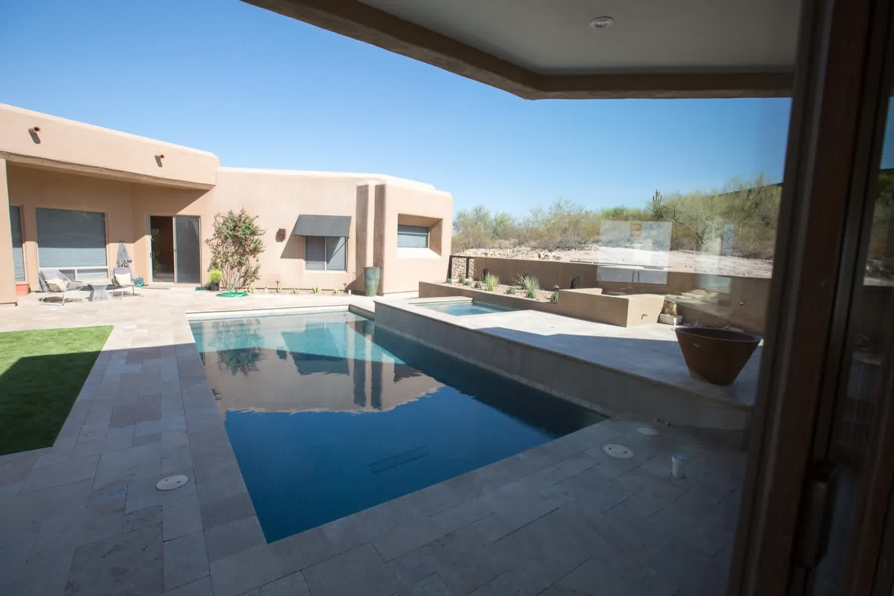
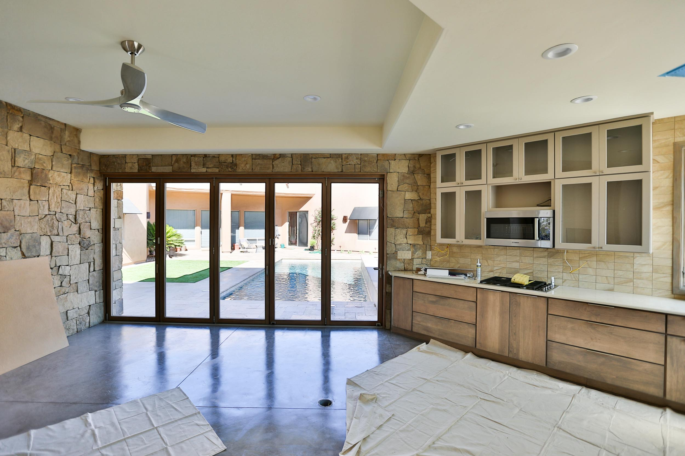
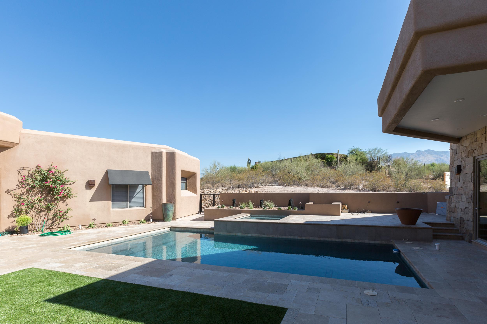

Residential / Outdoor living
Catalina Estates Pool House
One outdoor room, composed from architecture, water, landscape, and open desert sky.

- Location
- Tucson, Arizona
- Type
- Pool house + landscape
- Setting
- Catalina Estates
- Scope
- Guest house, pool, spa + landscape
- Threshold
- 15-foot stacking opening
The project
The commission replaced an existing pool and brought a new pool house, pool, spa, courtyard, and surrounding landscape into a single architectural scope.
A highly functional pool and guest house had to fit within HOA setbacks, pass a rigorous review process, and establish a strong relationship to the existing home.
A cantilevered patio and 15-foot stacking opening connect the full kitchen directly to the water. An elevated spa, Rumford fireplace, fire pit, steel gates, and trellis complete the courtyard.
Swimming, cooking, entertaining, and overnight guests are supported in one connected environment that remains open to the mountain horizon.



